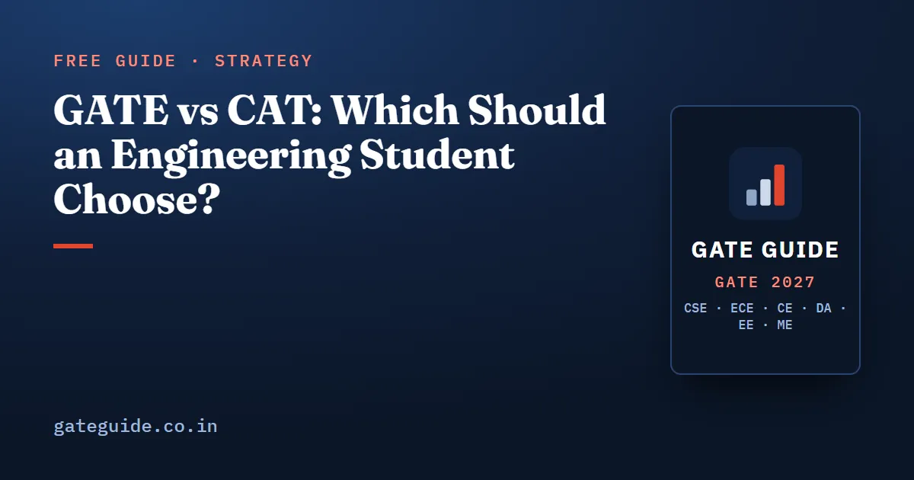

GATE vs CAT: Which Should an Engineering Student Choose?

GATE vs CAT is not a contest between a harder and an easier exam. GATE leads to technical postgraduate study, research and some public sector jobs; CAT leads to management programmes at the IIMs. If you are an engineer asking "GATE or CAT", this guide compares the two from their official documents and gives you a simple way to decide.
In this guide
Key takeaways
- GATE opens M.Tech, MS and PhD admission, often with a monthly stipend, and some PSU recruitment.
- CAT is the IIMs' admission test for their management programmes, such as the MBA and PGP, and their doctoral programmes in management.
- GATE tests your engineering subject for 85 of its 100 marks; CAT tests only verbal ability, data interpretation and logical reasoning, and quantitative ability.
- GATE allows you from the third year with no minimum marks; CAT needs a bachelor's degree, or final year, with at least 50% marks (45% for SC, ST and PwBD).
- In this cycle, CAT 2026 is on 29 November 2026 and GATE 2027 runs from 6 to 21 February 2027.
- Decide by the career you want, then pick the exam. The exam choice follows; it does not lead.
First, what each exam actually is
Define both terms before comparing them.
GATE (Graduate Aptitude Test in Engineering) is a national computer-based test conducted jointly by IISc and the IITs. GATE 2027 is organised by IIT Madras. You take a paper in your own subject, such as CS, EC, EE, ME or CE.
CAT (Common Admission Test) is a computer-based test that the Indian Institutes of Management conduct for admission to their management programmes. CAT 2026 is being conducted by IIM Indore, and its bulletin lists 22 IIMs. Some non-IIM institutions registered with CAT also use the score.
The key difference is what each exam measures. GATE asks how well you know engineering. CAT asks how quickly and accurately you read, reason and calculate, whatever your degree.
What each exam opens for you
| GATE | CAT | |
|---|---|---|
| Main use | Master's and direct doctoral admission in engineering, technology and architecture; doctoral admission in science and humanities | Management programmes at the IIMs (MBA, PGP and variants) and their doctoral programmes in management |
| Money while studying | M.Tech: ₹12,400 a month, generally for 22 months; PhD: ₹37,000 a month for two years, then ₹42,000 | Not part of the CAT bulletin; check each IIM's programme page |
| Jobs | Several PSUs have used GATE scores to shortlist | Not a recruitment test |
| Selection | GATE carries at least 70% weightage under ministry guidelines; the rest is the institute's test, interview or record | Each IIM sets its own process, and may weigh academics and work experience along with CAT |
Two cautions from the official texts. The GATE brochure says qualifying does not guarantee admission, a scholarship or a job. The CAT bulletin says meeting the minimum eligibility does not ensure shortlisting by the IIMs. Neither exam is a ticket; each is an entry to a selection process.
This guide makes no salary comparison, because neither official source publishes one. Be careful with any table that claims an average package for either route without naming its source and year.
In one line: GATE deepens your engineering and keeps you on a technical track; CAT moves you towards management. Pick the track, and the exam picks itself.
How the two papers are built
| GATE 2027 | CAT 2026 | |
|---|---|---|
| Duration | 3 hours | 120 minutes |
| Structure | 65 questions, 100 marks: 15 marks General Aptitude, 85 marks your subject | Three sections, exactly 40 minutes each |
| Sections | General Aptitude plus your chosen paper | Verbal Ability and Reading Comprehension; Data Interpretation and Logical Reasoning; Quantitative Ability |
| Moving between sections | Allowed at any time during the paper | Not allowed while a section is running |
| Question types | MCQ, MSQ and NAT; negative marking only on wrong MCQs | Set out on the CAT website and its mock test |
| Cities | 300+ cities in India | About 170 test cities |
GATE's marking is common to every paper: a wrong 1-mark MCQ costs of a mark, a wrong 2-mark MCQ costs , and MSQ and NAT carry no negative marks. The details are in the marking scheme guide, which applies to all papers.
Trap: CAT's sectional timer means you cannot borrow time from a strong section to rescue a weak one. GATE lets you move freely, so its time discipline is a different skill.
Where the preparation overlaps, and where it does not
The overlap is real but narrow, so measure it before you plan around it.
GATE General Aptitude has four parts: verbal aptitude, quantitative aptitude, analytical aptitude and spatial aptitude. Verbal and quantitative work, and the data interpretation inside quantitative aptitude, are close to what CAT tests. That is 10 questions and 15 marks out of 100 in GATE.
Now do the arithmetic. If you prepare only for CAT, you have prepared for about of a GATE paper. The other 85 marks, including 13 marks of engineering mathematics in papers such as CS, EC, EE, ME and CE, need subject study that CAT never asks for. The reverse is also true: GATE subject study does nothing for CAT's reading comprehension or logical reasoning sets.
If you do take both, use GATE aptitude work as a base, and the GATE General Aptitude guide shows how to secure those 15 marks.
Eligibility, fees and dates side by side
| GATE 2027 | CAT 2026 | |
|---|---|---|
| Who can apply | Third or higher year of any undergraduate degree, or a completed approved degree | Bachelor's degree, or final year of it, with at least 50% marks (45% for SC, ST, PwBD) |
| Minimum marks | None in the eligibility rules | 50% or 45%, as above |
| Fee | ₹2,000 per paper, or ₹1,000 for female, SC, ST and PwD candidates, in the regular window | ₹2,700, or ₹1,350 for SC, ST and PwBD; paid once however many IIMs you apply to |
| Registration | Extended window, with late fee, closes 12 October 2026 | Closed on 22 September 2026 |
| Exam | 6, 7, 13, 14, 20 and 21 February 2027 | 29 November 2026, three sessions |
| Result | 19 March 2027 | Likely by the first week of January 2027 |
| Score validity | Three years from the result date | Till 31 December 2027 |
The GATE figures are from gate2027.iitm.ac.in and its brochure; GATE 2027 registration and application fee has the full fee table. The CAT figures are from the CAT 2026 information bulletin, press release and media releases on iimcat.ac.in. Dates for CAT 2027 are not published yet.
A worked timeline for one cycle
Suppose you registered for both and are deciding whether to sit both.
- CAT is on 29 November 2026. From 10 October 2026, that is 50 days away.
- GATE starts on 6 February 2027, which is 69 days after CAT.
- Your GATE exam day falls somewhere between 6 and 21 February 2027, so the gap is 69 to 84 days.
That gap is enough to finish CAT and then switch fully to GATE revision. It is not enough to start GATE subjects from zero after CAT. The full GATE calendar is in the GATE 2027 exam dates guide.
How to decide: four honest questions
Answer these on paper before you buy a single book.
- What do you want to be doing in five years? Designing, coding, researching or teaching points to GATE. Managing teams, products or businesses points to CAT.
- Do you enjoy your engineering subjects? GATE rewards months of deep subject study. If that sounds like a chore, CAT may suit you better.
- Where are you in your degree? In the third year of a four-year B.Tech, only GATE is open to you, and a GATE score lasts three years.
- Do you need a public sector job route? Several PSUs have used GATE scores; CAT is not used for that.
If two answers point each way, pick the exam whose preparation you will still be doing happily in month four. A half-prepared attempt at both usually serves you worse than a full attempt at one.
If GATE is your answer, the next step is your paper's past questions. Our books cover CSE, ECE, CE, DA, EE and ME, each built by counting every past question against the official keys; see the books for every branch.
Quick revision
- GATE leads to M.Tech, MS, PhD and some PSU jobs; CAT leads to IIM management programmes.
- GATE is 3 hours, 100 marks, 85 of them on your subject; CAT is 120 minutes in three timed sections.
- The overlap is GATE General Aptitude, 15 of 100 marks.
- GATE eligibility starts in third year with no minimum marks; CAT needs final year or a degree with 50% (45% for SC, ST, PwBD).
- CAT 2026 is on 29 November 2026; GATE 2027 runs 6 to 21 February 2027.
- A GATE 2027 score lasts three years; a CAT 2026 score lasts till 31 December 2027.
- Choose the career first, then the exam.
Frequently asked questions
Which is better for engineers, GATE or CAT?
Neither is better in general; they lead to different careers. GATE is the route to M.Tech, MS and PhD admission with a stipend, and to some public sector jobs. CAT is the route to management programmes such as the MBA at the IIMs. Choose by the work you want to do in five years, not by which exam feels easier.
Can I prepare for GATE and CAT together?
You can, but the overlap is small. GATE General Aptitude, worth 15 of 100 marks, shares verbal and quantitative skills with CAT. The other 85 marks of GATE test your engineering subject, which CAT does not touch. In the 2026-27 cycle, CAT is on 29 November 2026 and GATE starts 6 February 2027, so both are possible if you registered.
When is CAT 2026 and when is GATE 2027?
CAT 2026 is on Sunday 29 November 2026 in three sessions, conducted by IIM Indore for the IIMs. GATE 2027 is on 6, 7, 13, 14, 20 and 21 February 2027, organised by IIT Madras, with results on 19 March 2027. CAT results are likely by the first week of January 2027, according to the CAT bulletin.
Can a third-year engineering student take CAT?
Not under the CAT 2026 rules. CAT requires a completed bachelor's degree or a candidate in the final year of the degree, with at least 50% marks, or 45% for SC, ST and PwBD candidates. GATE is different, since a student currently in the third year of any undergraduate degree is eligible, with no minimum percentage.
How long are GATE and CAT scores valid?
A GATE 2027 score is valid for three years from the result date of 19 March 2027. The CAT 2026 information bulletin says the CAT 2026 score is valid only till 31 December 2027. So a GATE score can be used across several admission cycles, while a CAT score serves essentially one.
Sources
- GATE 2027 official website (IIT Madras)
- GATE 2027 Information Brochure (official PDF)
- GATE 2027 opportunities (official)
- CAT 2026 official website (IIMs)
- CAT 2026 Information Bulletin (official PDF)
- CAT 2026 Press Release, 26 July 2026 (official PDF)
- CAT 2026 Media Release, 22 September 2026 (official PDF)
Dates, fees and the syllabus are set by the GATE 2027 organising institute and can change. Always confirm at gate2027.iitm.ac.in.